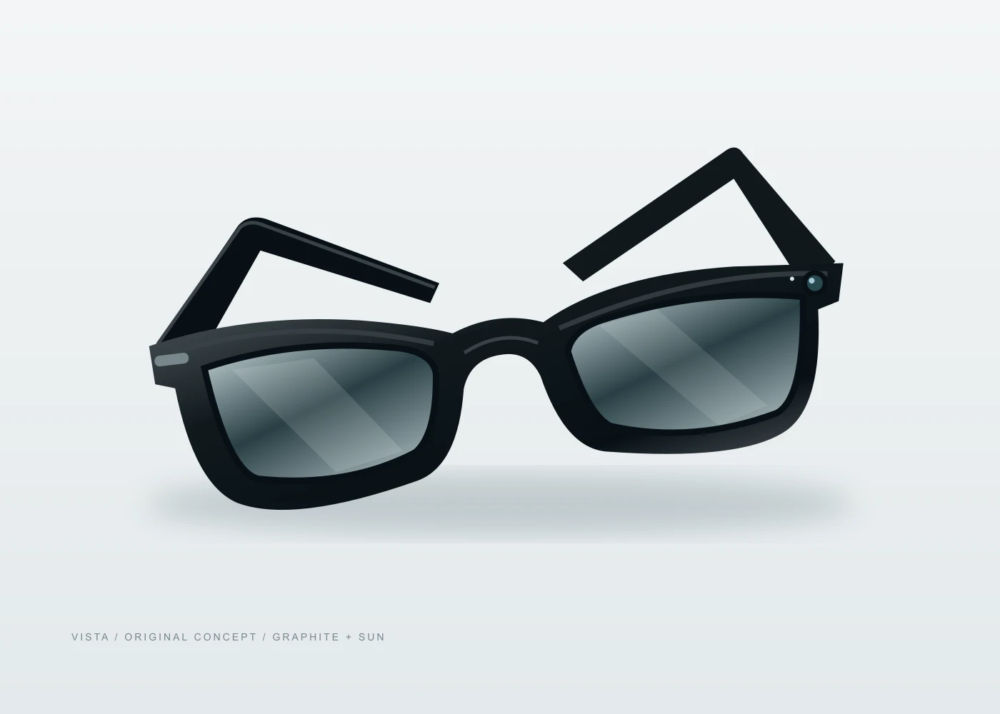

VISTA SMART GLASSES / INDEPENDENT CONCEPT
See more.
产品、镜片与兼容规则均为原创演示设定。非处方建议，不开启相机/录音，不加入购物车。
See more.
Carry less.
抬头看看，生活还有更多。
一副虚构的智能眼镜，为手与目光留出自由。
01 / 镜框色彩
02 / 镜片外观
03 / 佩戴组件
A LITTLE LESS SCREEN. A LITTLE MORE WORLD.
把双手空出来，
把双手空出来，
把世界装进眼里。
一副眼镜的形态，一份自由的想象。功能仅为概念，不提供真实捕捉。
A CONCEPT FOR YOUR NEXT WALK
为轻装出发，
为轻装出发，
留出更多可能。
镜框、镜片与佩戴组件，构成一个可核对的配置。所有规则为本项目假设，不代表真实 Meta 产品。
- 镜框设计
- 圆角方框 / 原创概念渲染
- 镜片选择
- 日光色 / 透亮色
- 配置边界
- 运动鼻托仅适配石墨框
- 连接与记录
- 无网络，无本地持久保存
一些你可能好奇的事。
这是可以购买的智能眼镜吗？
不是。Vista 是为展示硬件产品设计语言创作的原创概念，参数与配置关系仅供演示。
为什么暖沙色不支持运动鼻托？
这是示例中细镜腿与组件接口的假设，用于展示明确的兼容性反馈，不是现实硬件安全或佩戴建议。